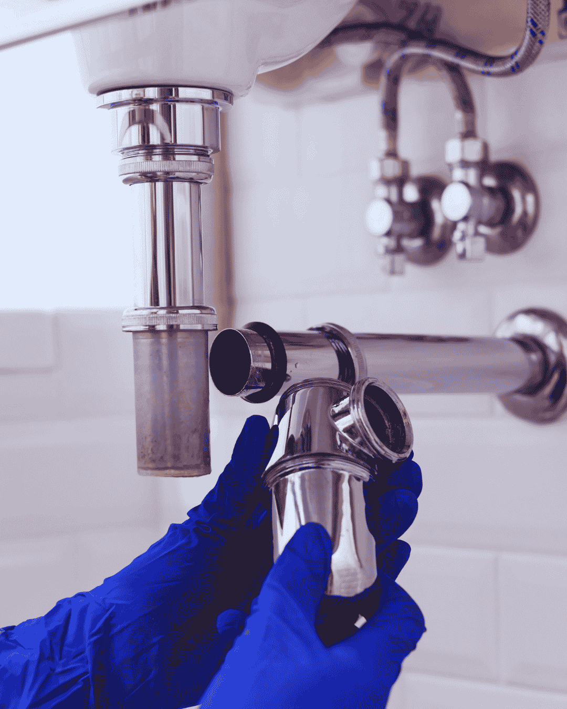
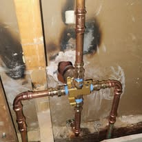
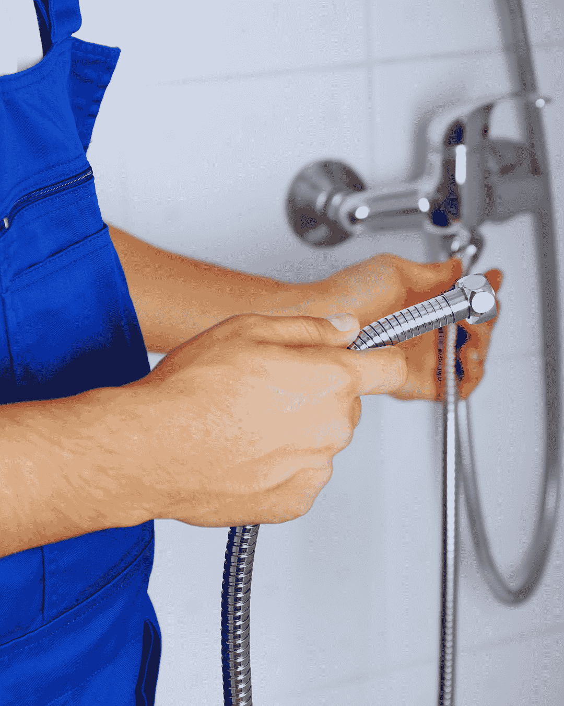
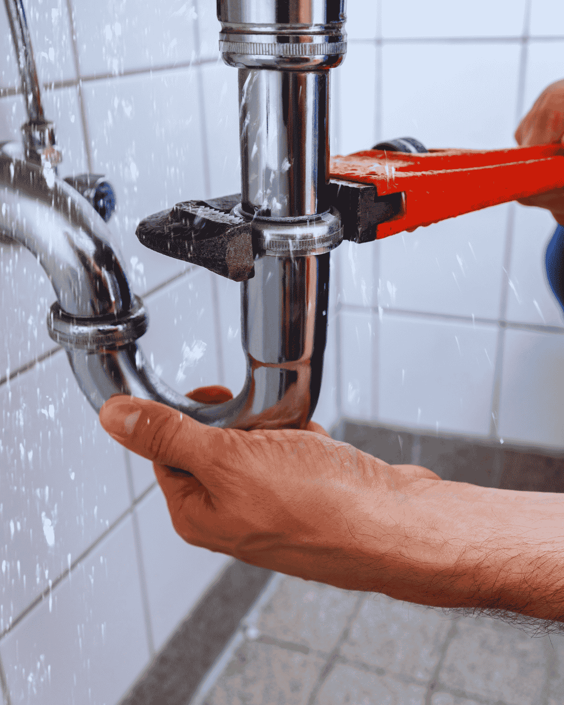

Home › Service Areas › Delray Beach
Plumber in Delray Beach, FL
Same-day plumbing service from Atlantic Avenue to Lake Ida, with flat pricing and after-hours emergency dispatch.
Looking for a plumber in Delray Beach? Our licensed local plumbers cover the whole city, from the barrier island condos east of the Intracoastal to the newer neighborhoods west of Military Trail. Call (833) 567-2788 and you get a live answer, a price range on the phone, and a same-day arrival window. Delray Beach is covered by the same crews and the same flat pricing as our main plumbing page, with drain cleaning and slab leak repair the most requested here.
Delray Beach homes are not all the same age, and that changes the work. A 1955 cottage near Del-Ida Park has different failures than a 2015 townhome off Congress. We come prepared for both, with trucks stocked for cast iron, copper, CPVC and PEX.
Every visit is flat rate. You approve a written price before anyone opens a wall or pulls a fixture.

Housing stock
Old Delray Pipe, New Delray Problems
The historic core of Delray Beach, including Del-Ida Park, Osceola Park and the streets around Swinton Avenue, holds homes built well before 1960. Many still carry original cast iron drain lines and copper supply that was poured into the slab. Both are now at the end of their working life.
What we see most in these homes are pinhole leaks in slab copper and kitchen branches that have scaled down to half their original diameter. A camera inspection settles the question quickly, and it usually points to either a targeted reroute or a full repipe rather than another patch.
Newer construction west of I-95 has the opposite profile. CPVC and PEX hold up well, but attic heat and hard water take a toll on fittings and water heaters. Those homes call us for heaters, disposals and fixture work far more than for pipe failures.


Coastal conditions
Salt Air and Intracoastal Homes
Properties east of Federal Highway and out on the barrier island deal with airborne salt every day. It attacks exposed fittings, outdoor shower valves, pool equipment plumbing and anything plated rather than solid brass. Fixtures that would last fifteen years inland often need attention here in five or six.
Water heaters in these homes also sit in garages and utility rooms with high humidity, which accelerates tank corrosion at the base. When we service a coastal water heater we check the pan, the anode rod and the surrounding humidity together, because replacing a tank without fixing the environment just resets the clock.
Response and coverage
Where We Work in Delray Beach
Trucks run daily through Delray Beach, so a same-day slot is usually open. We cover Lake Ida, Tropic Isle, Seagate, Pineapple Grove, Osceola Park, Sherwood Park, Rainberry Bay, Kings Point and the communities along Linton Boulevard and Atlantic Avenue.
After-hours emergency calls are dispatched as they come in. If a pipe lets go at midnight in Tropic Isle, someone is dispatched, not scheduled for morning. For condo and HOA properties we are used to working with building management on access, elevator scheduling and shared stack issues.

Good to know
Plumbing in Delray Beach: Local Details Worth Knowing
Utility jurisdiction, housing age and permitting all change how a job is quoted. Here is the local picture behind our Delray Beach plumbing work.
Water and sewer service
Delray Beach operates its own water treatment facility and utility department, drawing from the surficial aquifer through local wellfields. Water is treated with lime softening, which helps, though it still arrives hard enough to scale water heaters and fixtures. Because the city runs its own utility, permits and backflow reporting go through Delray Beach rather than Palm Beach County, which is worth knowing before scheduling water heater, repipe or sewer work.
Housing eras across the city
The historic core around Swinton Avenue, Del-Ida Park and Osceola Park holds homes built before 1960 with cast iron drains and slab copper. The mid-century neighborhoods off Federal Highway follow, then a large band of 1970s and 1980s construction west of I-95. Post-2000 communities along Linton and Atlantic sit at the western edge. Each era brings its own failure pattern, and the age of the home tells us what to inspect first.
Permits and coastal building rules
Water heater replacement, repiping, sewer lateral work and gas lines all require permits through the City of Delray Beach, with inspections before concealment. Properties east of the Intracoastal also sit in coastal building zones with additional requirements for exterior work and equipment anchoring. We pull the permits and handle inspection scheduling as part of the quoted price.
Booking a plumber in Delray Beach?Call for a price range on the phone and a same-day arrival window.
What this area calls about
Which Plumbing Services Do Delray Beach Homeowners Need Most?
Every service we run is available here, but four of them account for most of what we are called out to in Delray Beach. These are the ones worth understanding before you need them.
Drain Cleaning
The pre-1960 core still drains through cast iron that has narrowed for sixty years. Clearing it restores flow, but the camera is what tells you whether the pipe itself is finished.
Slab Leak Repair
Mid-century Delray homes were built with copper poured into the slab, and that copper is now at the age where pinholes start. Caught early it is a spot repair rather than a repipe.
Repiping and Pipe Repair
Once a house has had three leaks in two years, patching the fourth is throwing money at a system that has finished. Repiping in PEX or CPVC ends the cycle.
Water Heater Repair
Hard county water scales elements and shortens tank life, and the barrier island addresses add salt to that. Most calls turn out to be a part rather than the tank.
Five minutes, twice a year
What Should Delray Beach Homeowners Check Themselves?
All of it is free, takes minutes, and catches the problems that cost real money once they run unseen.
- Walk the floor barefoot once a month and note any warm patch.
- Check under every sink for green crust on the angle stops.
- Read the meter before bed and again in the morning with no water used.
- Know where the main shutoff is and turn it twice a year so it does not seize.
- If the house is east of the Intracoastal, look at exposed fittings for salt corrosion.
If one of these turns up a problem, (833) 567-2788 will tell you how serious it is before anyone comes out.
Full service list
What Plumbing Work Do We Do in Delray Beach?
Every service below is available at Delray Beach addresses, on the same schedule and the same flat-rate pricing we use in Boynton Beach.
Emergency Plumber
Burst lines, overflowing toilets and sewage at a floor drain do not wait for business hours. We answer live, talk you through the nearest shutoff, then dispatch a licensed plumber with a stocked truck and a written flat price before any work starts. Most of these calls come from the pre-1960 homes around Del-Ida Park, Osceola Park and Swinton Avenue, where cast iron and slab copper are both past their service life.
Drain Cleaning
Slow showers, gurgling sinks and a main line that backs up every few months are rarely one hair clog. They are grease, scale and old cast iron that has narrowed over decades. We clear the blockage with cabling or hydro jetting, then camera the pipe so you can see what actually caused it. Homes west of I-95 are newer and mostly on CPVC or PEX, so the failures there look nothing like the ones downtown.
Water Heater Repair & Installation
Most no-hot-water calls turn out to be a thermostat, element or gas valve rather than a dead tank, so we diagnose before we quote. When replacement is the honest answer, we size the unit to your household, pull the permit, and take the old heater away. Garage and closet installs dominate here, and the barrier island addresses east of the Intracoastal need corrosion-resistant fittings to last.
Tankless Water Heater Installation
A tankless water heater ends the back-to-back shower problem and frees up the closet or garage floor. Getting twenty years out of one depends on demand sizing, gas or electrical capacity and descaling access, not the brand on the box. We size the unit to your real fixture load and build in isolation valves for annual flushing. Delray's condo buildings set their own rules on shutoffs and heater pans, and we clear those before install day.
Leak Detection and Repair
Finding the leak is the job; opening the wall is the last step. We isolate pressure zones, then use acoustic and thermal equipment to narrow a hidden leak to inches before anything is cut, whether it sits under a slab, behind tile or out in an irrigation run. Downtown Delray sits close to the Intracoastal, so corrosion reaches valves and fittings before the pipe itself gives up.
Slab Leak Repair
Warm patches on a tile floor, running water with every tap closed and hairline cracks across a room all point under the concrete. We locate the leak precisely, then price spot repair, overhead reroute and full repipe side by side so you can weigh them against each other. The 55+ communities in 33446 run shared stacks, which changes how a blockage is traced and who it affects.
Sewer Line Repair and Replacement
When the main line backs up on a schedule, the pipe is the problem rather than what went down it. A recorded camera survey gives us the depth and position of every crack, offset and root intrusion, and that footage decides whether you need a spot repair, a liner or a new lateral. Lake Ida and the streets off Swinton were built before modern venting rules, and it shows in how their drains behave.
Pipe Repair and Installation
One pinhole in newer pipe is a repair. The third leak in sixty-year-old copper is a system telling you it is finished. We handle single burst lines and whole-home repiping in PEX, CPVC and copper, routed through attic and walls with small drywall openings, pressure tested and patched when we leave. West of Military Trail the construction is newer, so failures cluster at fittings rather than along the pipe run.
Toilet Repair and Installation
A running toilet is usually a cheap part; a rocking one is a failing flange seal quietly soaking the subfloor. We tell you which you have, then repair it or set a new comfort-height unit on a fresh flange and wax seal. We work in everything from downtown bungalows to the gated 55+ condos west of Military Trail, so we carry both current and discontinued trim.
Faucet & Fixture Installation
Kitchen faucets, shower valves, tub spouts, pot fillers and bidet seats all get installed with new quarter-turn angle stops and braided supply lines every time. Old seized shutoffs are the single most common cause of a call-back leak, and replacing them while the cabinet is already open costs almost nothing extra. Condo and villa work across 33446 and 33484 often involves shared shutoffs, so we coordinate with building management first.
Kitchen and Bathroom Plumbing
A remodel is won or lost at rough-in, while drain slope, valve depth and venting are still easy to get right. We handle rough-in and final trim, work to your contractor's schedule, and carry the inspections through so the job closes cleanly. Beachside units in 33483 need trim that survives salt air rather than whatever matches the counter.
Garbage Disposal Repair & Installation
A disposal that hums is jammed, one that is silent has lost power, and one dripping from the bottom seam has a failed motor seal that cannot be repaired. We diagnose the unit and the drain plumbing together, because a badly pitched trap arm or a missing dishwasher high loop will keep clogging no matter how good the disposal is. Older Delray bathrooms have narrow rough-ins, so clearances get checked before anything is ordered.
Gas Line Repair and Installation
We size, run and pressure test gas lines for ranges, dryers, pool heaters, generators and outdoor kitchens, and we pull the permit. Existing buried steel gets inspected before we tie in, because sandy, damp soil is hard on older runs. Irrigation-heavy lots and the HOA communities in 33446 and 33484 drive most of this work in Delray Beach.
Backflow Testing and Prevention
Irrigation systems, pool fills, fire lines and commercial kitchens all need a backflow assembly tested annually and reported to the water provider. We test, repair and replace assemblies, then file the paperwork so the notice is closed out and you are not left chasing a compliance letter. The City of Delray Beach requires permits and inspections on this work, and we pull and close them as part of the price.
Water Filtration Installation
Hard water costs you a water heater long before you notice it on the glassware. We test first, then size a softener, carbon tank or reverse osmosis system to the result and your real demand, and install it where filter changes are not a chore. Delray Beach runs its own water utility, so permits and backflow reports are filed with the city rather than the county.
Sump Pump Installation and Repair
A high water table means a sump pump is the difference between a damp slab and a flooded room. We install and replace pumps, check the float, the discharge line and the check valve, and add battery backup where losing power at the wrong moment is the real risk. Irrigation on the larger west Delray lots is where most cross-connection work in the city comes from.
FAQs
What Do Delray Beach Homeowners Ask Us Most?
How fast can you get to Delray Beach?
Most Delray Beach addresses are reached within 60 to 90 minutes. Emergency calls are moved to the front of the queue.
Do you work on condos and HOA properties?
Yes. We work regularly with building management on access and on shared stack problems in multi-unit buildings.
Are permits needed in Delray Beach?
Water heaters, repipes, sewer work and gas lines all require permits through the City of Delray Beach. We pull them and meet the inspector.
Why do so many Delray homes have slab leaks?
Because copper supply lines were poured into the slab in mid-century construction. After decades in damp soil, that pipe pits and fails.
Do you work in the gated communities west of Delray?
Yes. Kings Point and the other gated communities off Atlantic Avenue are regular work for us, and we are used to the access and sign-in procedures. Tell us the community when you book so the plumber arrives with whatever the gate requires.
Coverage by ZIP code
Delray Beach Plumber Coverage by ZIP Code
Our licensed plumbers run calls in every Delray Beach ZIP code, from the oceanfront condos in 33483 to the gated communities west of Military Trail in 33446. Drain cleaning, water heater repair, leak detection and emergency plumbing are available in all of them.
Plumber in 33444
Central Delray Beach, downtown and Osceola Park along Atlantic Avenue. Pre-1960 housing stock, so cast iron drain replacement and slab copper leak repair dominate the work here.
Plumber in 33445
Mid-city Delray between Congress Avenue and the Lake Ida area. Family homes calling for drain cleaning, water heater repair and sewer line camera inspections.
Plumber in 33446
West Delray Beach, including Kings Point and the gated 55+ communities off Atlantic Avenue. Condo shut-off and angle stop work plus water heater replacement.
Plumber in 33483
Beachside Delray east of the Intracoastal along Federal Highway and A1A. Salt-air fixture corrosion, oceanfront condo repipes and fixture replacement.
Plumber in 33484
West-central Delray near Military Trail. Villa and townhome plumbing, garbage disposal replacement and emergency leak repair.
Nearby ZIP codes we also cover the same day
- 33435
- 33436
- 33462
- 33487
- 33432
If your ZIP is not listed, call (833) 567-2788 anyway; coverage edges are rarely as neat as a map suggests.
Which Nearby Cities Do We Also Cover?
- Lake Worth Beach
- Lantana
- Boca Raton
- Wellington
- Greenacres
- Hypoluxo
- Ocean Ridge
- Manalapan
- Palm Springs
- West Palm Beach
- Highland Beach
Delray Beach sits between two of our busiest areas, so the same trucks cover it daily. Boynton Beach is immediately north, Boca Raton immediately south, and Highland Beach and Ocean Ridge are a short run along the coast. If your address is on a boundary, call and we will tell you which crew reaches you fastest.
Need a plumber in Delray Beach today?
Call now for a live answer, a flat written price and a same-day arrival window across Delray Beach and Palm Beach County.